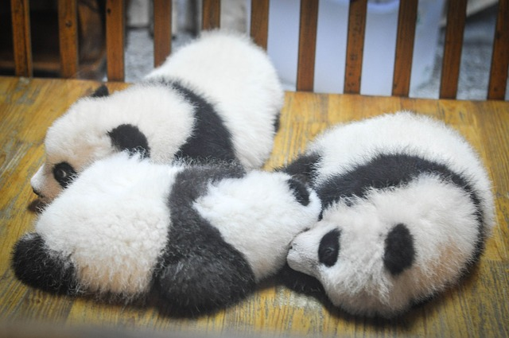
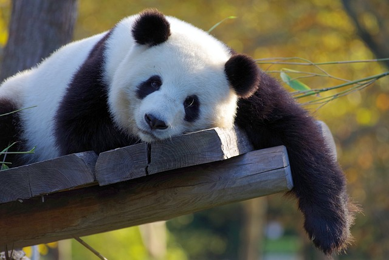
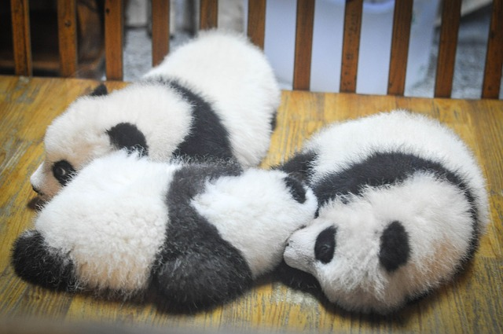
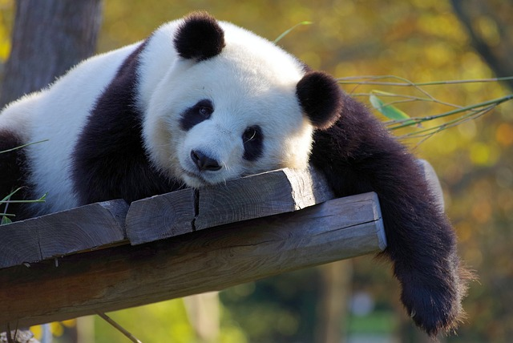

Giant panda
Giant pandas are large mammal animal, who are unique specie in China. Besides, many Chinese people consider giant panda as national treasure because they have lovely and chubby appearance. Giant pandas also have many fans all around the world. Many souvenirs about panda are sold in different countries.
Amount
Due to the fact that giant pandas have low reproduction rate, until 2018, there are around 2100 giant pandas all over the world. Most of giant pandas are taken good care in the Woollong Giant Panda Reserve SiChuan Province, China.
Feature
The giant pandas have black-and-white fur. Adult pandas are approximately 1.2 to 1.8 meters long , and their tail is 10 to 12 centimeter. Besides, their average weight are about 100 kilogram, but the strongest panda can weight up to 180 kilogram.
Make friend with panda Bing-Bing